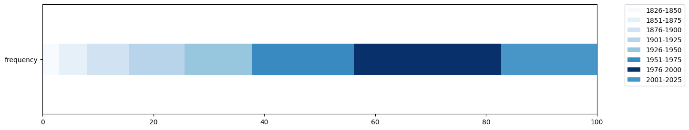
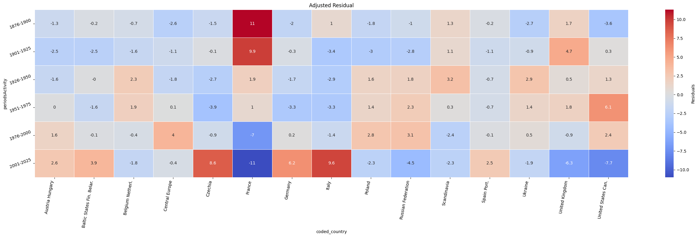
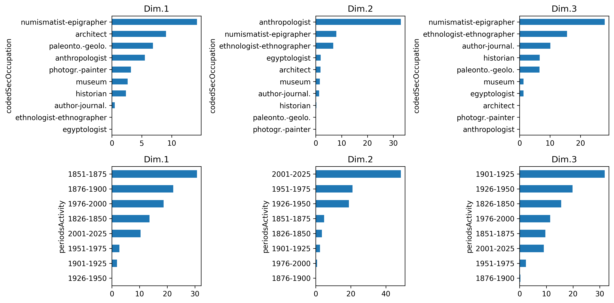
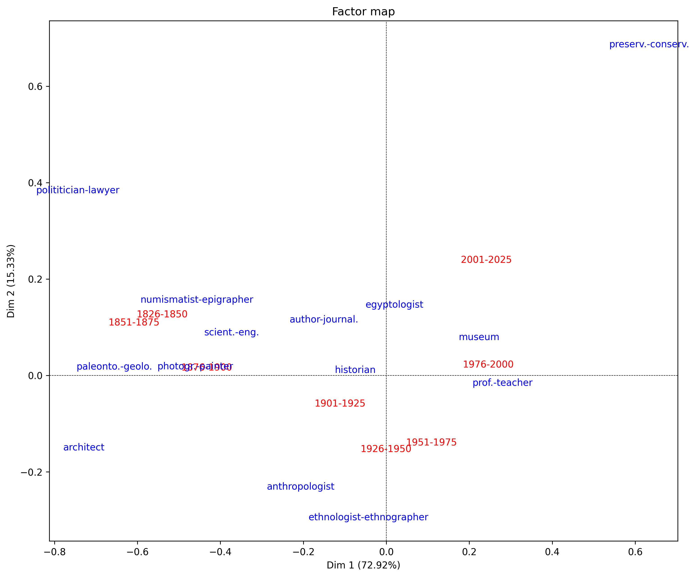
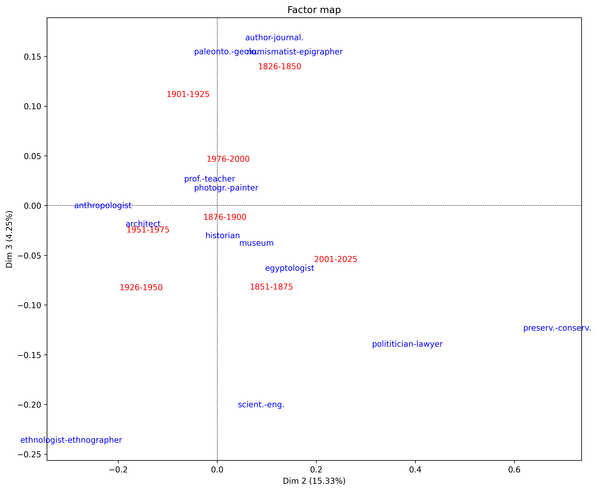

Short Description
For this project, Wikidata was queried to collect biographical data on archaeologists active over approximately the last 300 years. The resulting dataset of 18,369 individuals was subsequently analysed using Python, Jupyter Notebooks, and the SQLite database browser DBeaver, with the aim of addressing the research questions listed below.
Research Questions
Q1: How does the distribution of gender in archaeology vary across time and geographical location?
Q2: Which countries demonstrated the greatest archaeological activity during which time periods?
Q3: Which secondary professions were most prevalent among archaeologists, and can trends be identified across different periods and regions?
Q1: How does the distribution of gender in archaeology vary across time and geographical location?
Of the 18,369 archaeologists included in the study, 14,232 are male and 4,018 are female. A total of 119 individuals were excluded due to either missing gender information in Wikidata or identifying outside the male/female binary, leaving a final sample of 18,250 individuals. The remaining individuals were grouped into 20-year cohorts based on their recorded birth year, or, where multiple dates were listed in Wikidata, the earliest available year. Each individual's period of activity was estimated by assuming professional entry at age 45, calculated as follows:
Period of activity = birth year + 45
Prior to examining gender distribution across periods, an overview of the total number of archaeologists per cohort was established. As shown in the table and accompanying graph below, the number of documented archaeologists increases steadily over time, with the exception of the final cohort (2006–2025). This decline is likely an artifact of incomplete documentation rather than a true decrease in archaeological activity, as many currently active practitioners have not yet been entered into Wikidata.
| Period of Activity | Number of Individuals |
|---|---|
| 1826-1845 | 295 |
| 1846-1865 | 551 |
| 1866-1885 | 634 |
| 1886-1905 | 985 |
| 1906-1925 | 1145 |
| 1926-1945 | 1339 |
| 1946-1965 | 2014 |
| 1966-1985 | 3192 |
| 1986-2005 | 4796 |
| 2006-2025 | 3418 |

Modern archaeology gives the impression of being relatively evenly split between men and women. However, before archaeology became a formal discipline, it was largely a hobby pursued by wealthy individuals who privately financed their own excavations. Women with both the financial means and independence to commit seriously to such a pursuit were historically rare, and this is reflected in the data: men dominated the field in its earliest periods, though women were not entirely absent. By the period 1936-1945, women accounted for 14% of archaeologists. This may be linked to the gradual professionalisation of archaeology and its emergence as a university discipline in the first half of the 20th century.
From that point onwards, the proportion of women in the field rose steadily, reaching 42% in the period 2016-2025, as shown in the graph below.

It is worth noting that these figures may actually underrepresent women in archaeology. Wikipedia, the source of the underlying data, has a well-documented gender bias: of all biographical articles on the platform, only one in five concern women. The true proportion of female archaeologists may therefore be higher than the data suggests.
Wikipedia Gender Bias on Wikipedia
The graph is based on 10-year periods in order to observe more detail.
Births Distribution 10-Years Gender PercentJupyter Notebooks:
da1_distribution_birthYear_gender
da3_regions_bivariate_analysis
Q2: Which countries demonstrated the greatest archaeological activity during which time periods?
| Region | Number of Individuals |
|---|---|
| Western Europe | 3527 |
| Eastern Europe | 2507 |
| Southern Europe | 2086 |
| Northern Europe | 1028 |
| Asia | 729 |
| America North | 640 |
| Russia | 525 |
| America Central/South | 139 |
| Africa | 295 |
| Australia/Ilands | 43 |
| Melanesia | 1 |
For most of history, archaeology was a privilege of the wealthy, and European nations, which were among the most prosperous and expansionist. Additionally, they were particularly active in collecting antiquities from distant lands and ancient civilisations (as well as contemporary ones). It follows that the earliest archaeologists in the dataset were born in Europe, as seen in the table above. However, this pattern is compounded by an inherent bias in Wikidata itself, which is strongly Eurocentric in its coverage. As a result, even in later periods, European-born archaeologists continue to be overrepresented in the data. This pattern is observed in the interactive map linked below.
Birth Places Distributed across PeriodsTo identify potentially high concentrations of archaeologists by country and period, the heatmap below displays the difference between the observed and expected number of individuals for each country-period combination.

The heatmap is limited to countries in which more than 200 archaeologists were born, comprising the following countries and regional groupings: Germany, France, Italy, Czechia, Central Europe, the Russian Federation, the United Kingdom, Spain & Portugal, the United States & Canada, Austria-Hungary, Poland, Ukraine, Scandinavia, the Baltic States, Finland & Belarus, and Belgium & the Netherlands.
The first country to emerge as particularly active in archaeology is France during the period 1876-1900, indicated by the value 11 and deep red colouring in the heatmap. Italy, the United Kingdom, and Scandinavia also show elevated activity in this period, though to a considerably lesser extent. This corresponds to a period of intense French interest in ancient civilisations, most notably through excavations in Mesopotamia, the findings from which came to fill the Louvre in Paris — among them the Victory Stele of Naram-Sin (c. 2200 BCE), whose foundation deposit had previously been analysed by the Babylonian king Nabonidus around 550 BCE, making him the earliest recorded individual to conduct what might be considered archaeological investigation.
Several other countries appear to begin investing more substantially in archaeology around the 1950s, coinciding with the broader professionalisation of the discipline. In the most recent period (2001-2025), France has proportionally lost its earlier dominance, though it remains active. Italy, Czechia, and Germany, by contrast, show a notable spike in activity during this same period.
It is worth noting that Greece does not appear in the heatmap, despite its exceptionally rich archaeological heritage.
Jupyter Notebooks:
da2_distribution_of_births_in_space
da3-1_countries_bivariate_analysis
Which secondary professions were most prevalent among archaeologists, and can trends be identified across different periods and regions?
The secondary occupations discussed in this section refer to professions held by individuals in addition to their primary occupation of archaeology. Given the considerable variety of professions represented in the dataset, many have been grouped thematically to produce analytically meaningful category sizes. For example, "curator", "archivist", "museum professional", and "museologist" have been consolidated under the umbrella term "museum".
Secondary Professions and Periods
As archaeological methods evolved, new professional roles emerged while others persisted or fell into disuse. The secondary professions recorded in Wikidata were combined with each individual's period of activity to conduct a Correspondence Analysis. Dimensions 1 and 2 are presented jointly in the first graph below, followed by a second graph displaying Dimensions 2 and 3. Preceding both graphs, the relative contribution of each occupation to each dimension is shown.



The first graph, displaying Dimensions 1 and 2, indicates that the numismatist-epigrapher occupation is most strongly associated with the earlier periods of the 19th century and the beginning of the 20th century. The anthropologist occupation, by contrast, is most heavily weighted on Dimension 2 and is associated with the late 20th century. Notably, across all three dimensions, the historian occupation clusters near the centre of the graph, suggesting that the combination of history and archaeology has remained consistent across all periods.
A possible explanation for the prevalence of the numismatist-epigrapher in earlier periods lies in the dominant research interests of the time, which focused primarily on literate ancient civilisations — such as those of ancient Egypt, ancient Greece, Mesopotamia, and Rome — all of which possessed writing systems, and several of which produced coinage. The secondary professions of archaeologists in this period naturally reflected these interests. While the numismatist-epigrapher has by no means disappeared as a secondary profession, the scope of archaeological inquiry has since broadened considerably to encompass cultures whose study does not lend itself to numismatic or epigraphic analysis.
This broadening of research interests corresponds with the rising prominence of anthropology within the discipline. The analysis of human remains became increasingly central to understanding the lifeways of past populations, particularly those without written records, driving greater demand for anthropological expertise among archaeologists.
Secondary Professions and Countries
Jupyter Notebooks:
Overall Conclusions
paragraph